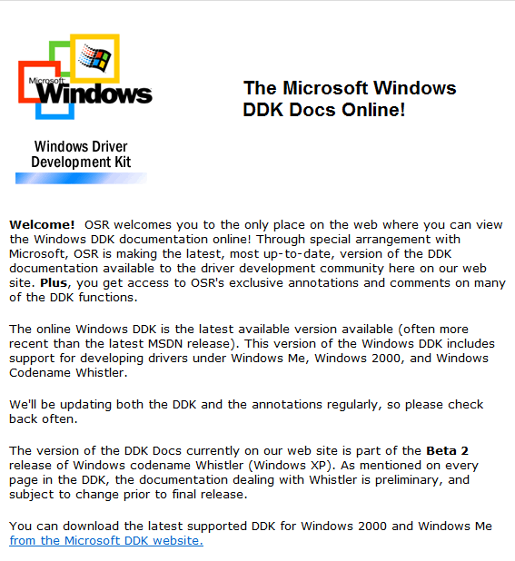
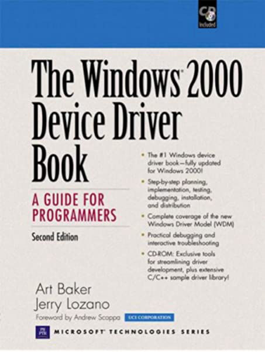
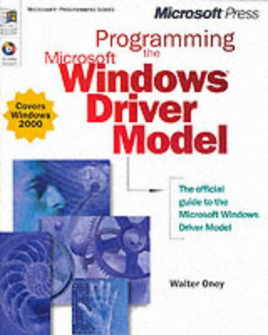
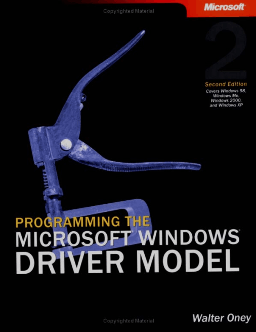
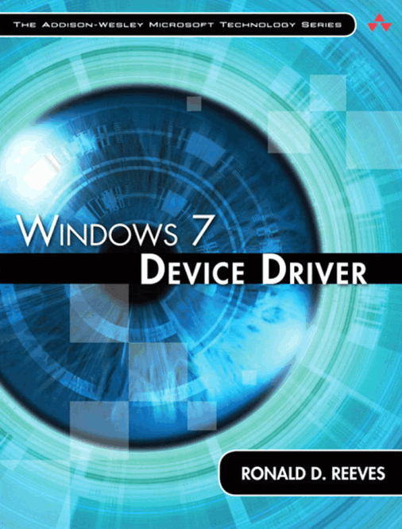

Installing the Windows XP DDK (Old but relevent Guide)
A good guide detailing what to do to set up the DDK for Driver Development for Windows XP/2003

Windows ME-Whistler DDK 'Online' Documentation (.chm format)
A set of Microsoft DDK Documentation aimed at Windows ME to XP with the aim to give users a complete perspective on Device Driver Development.

The Windows 2000 Device Driver Book, A Guide
for Programmers, Second Edition
"With The Windows 2000 Device Driver Book, any
experienced Windows programmer can master driver
development start to finish"

Programming the Microsoft Windows Driver Model First Edition (.epub format)
An In-depth look into many different aspects of Driver Development for Windows 2000 and a look into the Windows Driver Model

Programming the Microsoft Windows Driver Model Second Edition
An In-depth look into many different aspects of Driver Development for Windows

Windows 7 Device Driver
Information on the Windows 7 (NT 6) Device Driver Framework, development and more